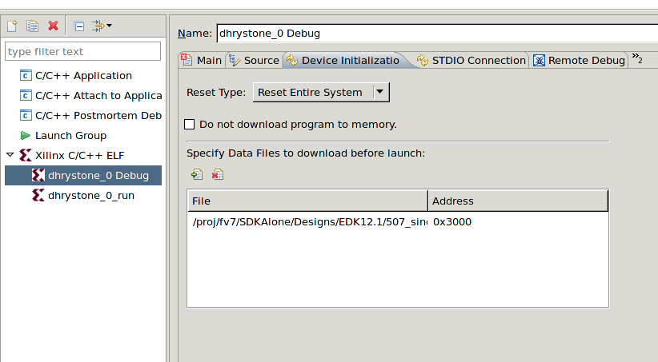

Specifying initialization tasks
To configure the XMD target options, do the following:
- In the C/C++ Projects view, select a project.
- Select Run > Run Configurations or Run > Debug Configurations.
- In the Configurations box, expand Xilinx C/C++
ELF.
- Select a run or debug configuration.
- Click the Device Initialization tab.

- In the Reset Type drop-down list, select the reset type.
- If you do not want to download the ELF program file, select Do not download program to memory.
- If you want to download any data files, add the data files to the download list, along with the and start address at which you want to download them.
- To enable program debugging in safe mode, click to select Enable safemode. For safe mode usage information, see also the Embedded System Tools Reference Manual UG111 topic covering the XMD safemode command.
- Click Apply to save the settings.

Debug
overview
Debugging applications
Run overview
Profile overview

Creating or editing a run/debug/profile configuration
Debugging a program
Running a program
Profiling a program
Copyright © 1995-2012 Xilinx, Inc. All rights reserved.